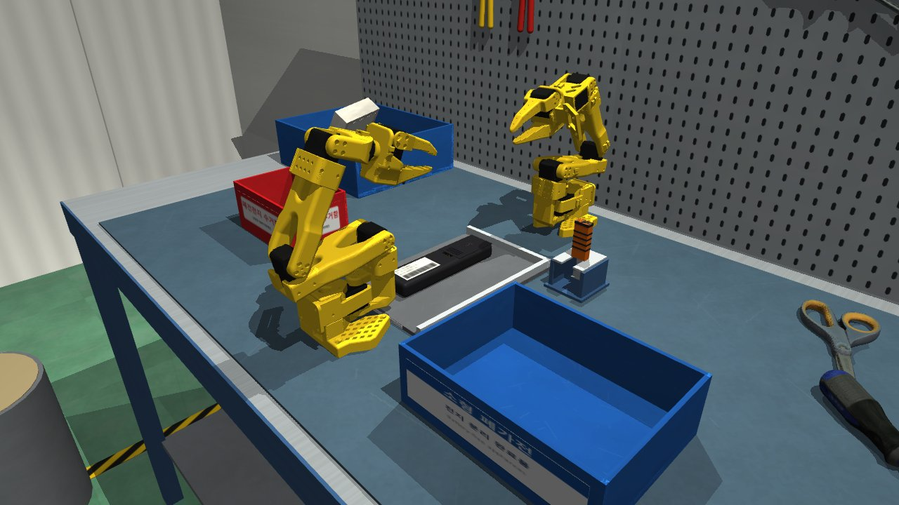
소형 폐가전을 파쇄하기 전에 교체형 원통형 건전지(AA/AAA)를 빼내는 해체 작업을 SO101-Nexus 시뮬레이터에서 정의하고 풀었다. 리모컨 4종(TV, 셋톱박스(AAA), 에어컨, 조명(AAA))의 배터리 칸은 실제 제품처럼 + 끝이 고정 립 밑에, − 끝이 코일 스프링에 고정되어 있어, 커버를 열고 뒤집거나 흔들어도, 셀을 스프링 쪽으로 밀기만 해도 빠지지 않는다(대조실험 0/20, 0/20). SO-101 두 대가 사람 작업자의 두 손처럼 일한다. 주 팔(R)은 리모컨을 지그에 붙이고 래치 커버를 눌러 밀어 연 뒤 리모컨을 붙잡고, 공구 팔(L)은 거치대에서 얇은 분해 공구(T자 갈고리 팁)를 꺼내 notch에 넣어 두 셀을 스프링 쪽으로 밀어 립을 지나게 하고 + 끝을 지렛대로 들어 립 위에 얹는다. 이어서 R이 리모컨을 폐건전지 수거함 위에서 뒤집고 흔들어 셀을 떨어뜨리고, 빈 본체를 소형 폐가전 상자에 넣는다. 정책은 LLM이 작성한 스킬 함수와 상태 머신이며, 측정값 기반 폐루프 보정과 재시도를 포함한다. 고정된 최종 코드로 4기기 × seed 0–19 = 80회 평가에서 80/80(100 %), 개발 중 한 번도 쓰지 않은 seed 20–39 80회에서 80/80(100.0 %)을 얻었다.
이 결과에는 두 단계의 시행착오가 있다. Phase 1(중간 발표, 팔 1대)에서는 그리퍼가 셀 + 끝을 들어 올릴 수 없어 "밀면 + 끝이 바닥 지지대 때문에 저절로 들리는" 단순화를 썼고, TV 리모컨만 동작했다(중간 발표 10/10, 재측정 7/10, 다른 기기 0/6). Phase 2(최종)에서는 이 단순화를 없애고 팔을 2대로 늘려 공구를 쓰게 했으며, 20차례가 넘는 평가–분석–수정 반복으로 4기기 모두를 성공시켰다. 5장에 두 단계의 실패 원인과 개선 전후 수치를 환경 설계 문제와 정책 문제로 구분해 정리했다.
소형 폐가전은 파쇄·선별 전에 배터리 같은 위험 부품을 분리해야 한다. 배터리는 크게 커버를 열고 빼는 교체형과 접착된 내장형이 있다. 내장형은 하우징을 뜯어야 하는 별도 문제라 범위 밖(향후 과제)으로 두고, 이번에는 교체형 원통형 셀(AA, AAA)이 든 리모컨을 대상으로 한다. 셀 종류가 달라도 "− 끝 스프링 + + 끝 걸림 턱" 방식은 같아서 같은 동작 순서로 뺄 수 있다는 점이 대상 선택의 근거다.
동기에 대해서는 과장을 피한다. 리모컨 건전지 자체가 큰 산업 문제라고 주장하지 않으며(출처를 확인하지 못한 "폐기물 화재의 주원인" 같은 주장은 쓰지 않는다), 파쇄 전 위험 부품 분리 공정의 대표 사례로서 접촉이 많은 분해 동작(래치 커버 해제, 스프링·립 걸림 해제, 공구 사용, 양팔 협조, 뒤집어 빼기)을 다룬다는 데 의미를 둔다.
| 항목 | 내용 |
|---|---|
| 환경 | 국내 소형 폐가전 해체 작업장의 작업대(강철 작업대 + ESD 매트). 해체 지그(펜스 2면) 위에 폐 리모컨 1개가 배터리 면을 위로 놓여 있다(위치·각도는 seed마다 무작위). 지그 왼쪽에 빨간 폐건전지 수거함, 앞쪽에 파란 소형 폐가전 상자, 지그 건너편에 공구 거치대. SO-101 두 대: 주 팔 R(작업대 원점), 공구 팔 L(지그 건너편, 마주 봄). |
| 수행 과정 | ① R: 리모컨을 지그 펜스에 밀어 붙임 ∥ L: 거치대에서 분해 공구를 집음 → ② R: 래치 커버를 누르면서 밀어 분리(커버가 손가락에 끼면 펜스 너머에 버림), 리모컨 재정렬 → ③ R: 리모컨 옆면을 잡아 지그에 고정 → ④ L: 공구 팁을 pry notch에 넣고 두 셀을 스프링 쪽으로 밀어 + 끝이 립을 지나게 한 뒤, + 끝을 지렛대처럼 들어 립 위에 얹음(실패 시 최대 3회) → ⑤ L: 물러남 → R: 다시 잡아 들어 올림 → ⑥ R: 폐건전지 수거함 위에서 뒤집고 흔들어 셀을 떨어뜨림 ∥ L: 공구를 거치대에 반납 → ⑦ R: 빈 본체를 소형 폐가전 상자에 넣음. |
| 성공 판별 | 에피소드 종료 시 자동 판정(battery_sim/success.py), 네 조건 모두 만족:
(1) 모든 셀의 중심이 폐건전지 수거함 영역 안, (2) 본체 중심이 소형 폐가전 상자 영역 안(여유 10 mm),
(3) 상자 안에 셀이 없음(잘못 분류 방지), (4) 에피소드 동안 로봇(양팔 + 손에 든 공구)과 기기(본체·커버) 사이의 접촉점별 법선력 최댓값 ≤ 40 N.
공구 반납과 커버의 최종 위치는 판정하지 않는다(참고 지표). |
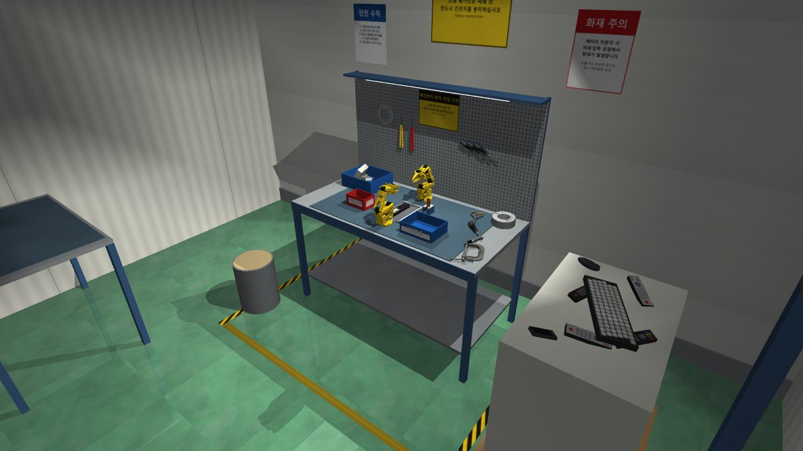
wide 카메라). 녹색 에폭시 바닥, 샌드위치 패널 벽, 안전 포스터, 타공판 공구 걸이, 해체 작업대.SO101-Nexus 0.10.0이 제공하는 SO-101 MJCF(MuJoCo Menagerie 기반, Apache-2.0)와 STS3215 서보 위치 제어 게인을 그대로 쓰고,
장면은 battery_sim/scene.py에서 직접 생성한다. 국내 소형 폐가전 해체 라인을 상정해 꾸몄으며 실제 현장 사진을 참고한 것은 아니다.
| 요소 | 구성 | 현실성·타당성 근거 |
|---|---|---|
| 공장 배경 | 녹색 에폭시 바닥(z = −0.85 m), 샌드위치 패널 벽, 천장 조명, 한글 안전 포스터, 바닥 안전 테이프 | 재활용·해체 작업장의 전형적 외관 |
| 작업대 | 강철 작업대 + ESD 매트, 타공판(공구 걸이), 선반, 작업등 | 전자제품 해체 작업대의 표준 구성(정전기 방지) |
| 해체 지그 | 지그 판 + L자 펜스 2면, 윗면 z = 6 mm | 기기를 일정 위치로 맞추는 위치결정 지그. 펜스에 밀어 붙여 위치 오차를 줄인다 |
| 폐건전지 수거함 | 빨간 상자, 11 × 17 × 8.5 cm, 중심 (0.12, 0.30) m, 바닥 두께 12 mm | 국내 폐건전지 수거함의 색·라벨. 위치·크기는 5자유도 팔의 뒤집기 도달 범위 분석으로 결정(5.1) |
| 소형 폐가전 상자 | 파란 상자, 18 × 24 × 7.5 cm, 중심 (0.075, −0.27) m | 소형 폐가전 분리배출 |
| 공구 거치대 + 분해 공구 | 포크형 거치대(중심 (0.32, −0.14) m, 판 높이 46 mm). 공구: 고무 손잡이 11 × 22 × 55 mm, 얇은 강철 샤프트, T자 팁 — 넓은 블레이드 ±8 mm(두 셀의 + 끝면을 동시에 밂), 좁은 목 ±4 mm(두 립 사이 9.6 mm 틈 통과), 두께 0.8 mm, 10° 꺾인 갈고리 발 | 중간 발표에서 예고한 "얇은 스패너형 분해 공구(spudger)". 공구를 늘 같은 자세로 꺼내고 넣도록 포크형 거치대 사용 |
| 장식 공구 | 드라이버, 가위, 마커(YCB), 테이프 2종, C-클램프(Google Scanned Objects) 3D 스캔 메시, 대기 상자, 톤백 | 실제 물체 스캔으로 현실감. 모두 팔이 닿지 않는 곳에 정적으로 배치해 태스크에 간섭하지 않음 |
| 조명·카메라 | 천장 확산광 3개 + 작업등. 카메라 9개: overview, hero, operator, wide, closeup, top, side, bincam, slotcam | 평가·영상·실패 분석용(예: slotcam은 pry notch 근접) |
| 로봇 | 주 팔 R: 베이스 원점, +x 향함. 공구 팔 L: 같은 MJCF를 복제해 이름 앞에 l_, 베이스 (0.50, 0, 0), yaw 180°(마주 봄) | 사람 작업자의 두 손 역할. 서로 마주 보게 놓아 지그를 사이에 둠 |
| 초기 자세 | 두 팔 모두 HOME = (pan 0°, lift −100°, elbow 40°, wrist_flex 80°, roll 0°), 그리퍼 0 | 작업 공간 밖으로 접힌 자세 |
모든 작업 대상(지그, 수거함, 상자, 기기, 공구 거치대)은 SO-101 위쪽 도달 거리(약 0.36 m) 안에 있다. 물리 설정은 timestep 2 ms, implicitfast 적분,
elliptic 마찰 원뿔, impratio 10, 제어 주기 20 ms(50 Hz). 장면 전체를 메모리에서 컴파일해(load_model) 한글 경로에서도 실행된다(MuJoCo는 비ASCII 경로 파일을 열지 못함).
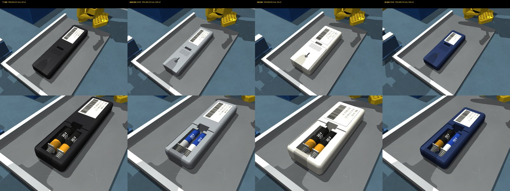
| 기기 | 길이 × 폭 × 두께 (mm) | 셀 | 셀 간격 | − 단자 스프링 |
|---|---|---|---|---|
tv_remote TV 리모컨 | 180 × 50 × 22 | AA ×2 (14.5 × 50.5 mm, 23 g) | 16 mm | 300 N/m |
stb_remote 셋톱박스 리모컨 | 165 × 46 × 19 | AAA ×2 (10.5 × 44.5 mm, 11.5 g) | 14 mm | 150 N/m |
ac_remote 에어컨 리모컨 | 150 × 58 × 26 | AA ×2 | 16 mm | 300 N/m |
light_remote 조명 리모컨 | 130 × 46 × 19 | AAA ×2 | 14 mm | 150 N/m |
셀 치수·질량은 IEC 규격. 스프링은 모두 0.6 N 예압. 셀 간격과 스프링 강도는 5장의 실패 분석 결과로 정해졌다(AAA 간격 19 → 16 → 14 mm, TV·에어컨 400 → 300 N/m).
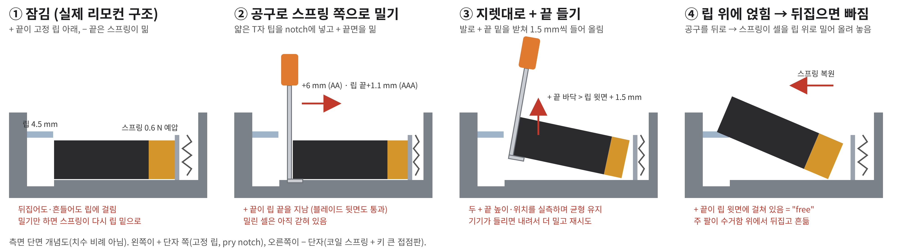
solref 0.005(딱딱한 접촉). MuJoCo 기본(질량 비례 연성 접촉)으로는 공구가 셀 속으로 수 mm 파고들었다. 셀 마찰 0.25, 포켓 옆벽 0.2.결과적으로 셀을 빼려면 + 끝을 립 길이보다 더 스프링 쪽으로 밀고(AA 6.2 mm, AAA 립 끝 + 1.1 mm), 그 상태로 + 끝을 립 윗면보다 위로 들어야 한다.
밀기만 하면 스프링이 셀을 립 밑으로 다시 밀어 넣고, 뒤집기만 하면 립에 걸린다. 이를 두 가지로 검증했다: (a) 공구 없이 기기를 뒤집어 놓고 ±3 g로 흔드는
보유력 시험(dev_tools/retention_test.py, 4기기 모두 셀이 칸 안에 남음, 셀 이동 최대 6.1 mm — 판정 기준 30 mm), (b) 실제 정책의 대조실험(4.4절, 0/20 · 0/20).
seed마다 리모컨(+ 커버 + 셀을 한 덩어리로)을 공칭 위치 (0.205, 0.005) m 기준으로 dx ∈ [−20, 0] mm, dy ∈ [−12, +22] mm, yaw ∈ [−0.25, +0.25] rad(±14.3°)
균일 무작위로 놓고 0.5 s 안정화한 뒤 시작한다. 마찰·질량은 고정. 같은 seed는 같은 초기 상태를 만들고 정책이 결정적이므로 결과가 재현된다.
안정화 후 셀·커버·본체가 의도한 자리에 안정적으로 놓이는지는 디버깅 추적에서 공구 작업 직전 측정한 셀 상태(cell_state: + 끝 이동 0.0 ± 0.1 mm, 기울기 0 ± 0.5°)로 확인했고, 공구 없이 뒤집어 흔드는 보유력 시험(2.3)으로 고정 상태도 확인했다.
과제가 허용하는 "LLM이 작성한 직접 작성 정책"이다. 스킬 함수(저수준 동작)와 스킬 호출 코드(상태 머신)를 모두 LLM이 생성했고, 학생이 매번 실행해 검증했다. 매 step의 저수준 action을 LLM이 출력하지 않으며 평가 중 LLM 호출은 없다(결정적·재현 가능). 이 방식을 택한 이유를 두 가지로 나누어 적는다.
LLM 사용 정보. 도구: Anthropic Claude의 에이전트형 코딩 도구 Claude Code. 모델명과 버전은 code/PROMPTS_phase1.md 머리말에 기록했다(두 단계 모두 같은 모델).
프롬프트 원문 전체: Phase 1 대화 기록 35개 항목(PROMPTS_phase1.md, 도구 알림 포함), Phase 2 사용자 프롬프트 8개(PROMPTS_phase2.md). 생성된 코드: code/ 전체.
대화는 "한 번의 프롬프트"가 아니라 여러 턴이며, Claude가 코드를 작성·실행하고 시뮬레이션 로그·접촉력·렌더링을 보고 원인을 찾아 고치는 방식이었다.
학생은 목표·범위·방향(예: "양팔로", "공구를 써서", "실제와 같은 구조로", "80/80이 될 때까지")을 지시하고, 결과와 설명을 검토했다.
ik.py). TCP 또는 공구 팁 위치 + 지정한 축 방향(접근 방향, 조 방향)만 맞춘다(5자유도).compliant_close).yield). run_par(g1, g2)가 두 팔의 스킬을 tick 단위로 번갈아 진행해 양팔이 실제로 동시에 움직인다(예: R이 커버를 여는 동안 L이 공구를 집음).| 단계(스킬) | 팔 | 하는 일 | 피드백·판정 |
|---|---|---|---|
push_to_fence | R | 닫은 그리퍼로 리모컨 윗면을 눌러 마찰로 끌어 앞 끝을 펜스에 붙임 | 측정한 펜스 간격·yaw |
pick_tool | L | 거치대에 낮게 −x 방향으로 접근, 손잡이를 폭(22 mm) 방향으로 집고 4 mm 들어 −x로 빼냄. 손 안의 공구 자세를 측정해 저장(calibrate_tool) | 공구 위치, 파지력 > 5 N |
slide_cover | R | 커버 래치를 누르면서 +x로 밀어 분리. 커버가 손가락에 끼면 펜스 너머에 버림(drop_cover) | 래치 해제 여부, 커버 이동량 |
reseat_on_fence | R | 커버를 미는 동안 밀린 리모컨을 다시 펜스에 붙임(참고용) | 펜스 간격 |
hold_device | R | 리모컨 뒤쪽 단단한 부분을 폭 방향으로 집어 지그에 고정. 공구 팔과 손목이 부딪히지 않게 20° 뒤로 기울여 접근. 5자유도 IK의 위치 오차를 목표 사전 보정으로 없앰(고정 조가 옆면 1 mm 바깥에 오도록). 움직이는 조에 힘이 없으면 2 mm 바깥으로 재파지 | 움직이는 조 접촉력, 파지력 |
pry_cells | L | 3.3절. 최대 3회 | 셀 + 끝 위치·높이·기울기(실측) |
tool_retreat | L | 공구를 기기에서 떼어 거치대 입구 쪽으로(R의 재파지 공간 확보) | — |
grasp_device | R | 놓았다가 위에서 다시 잡아 들어 올림(힘 제한) | 들림 높이 > 6 cm |
flip_over_bin | R | 계획된 경로(3.4)로 수거함 위에서 뒤집고 ±0.08 rad로 흔듦 | 셀이 수거함에 들어갔는지 |
return_tool | L | 공구를 포크 거치대에 다시 꽂음(성공 기준 아님) | 공구 위치 |
drop_in_crate | R | 빈 본체의 긴 축을 수평으로 유지하며 상자 위에 가져가 놓음(격자 탐색) | 본체 위치 |
pry_cells (가장 어려운 부분)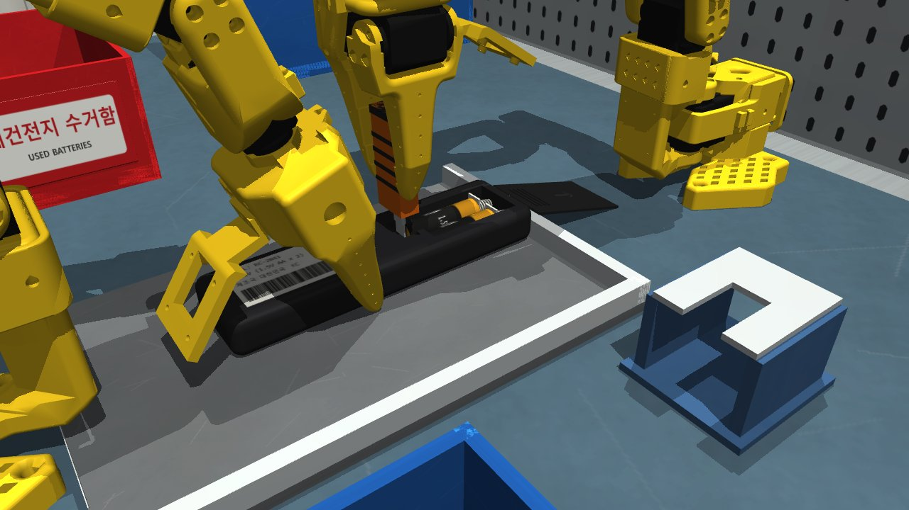
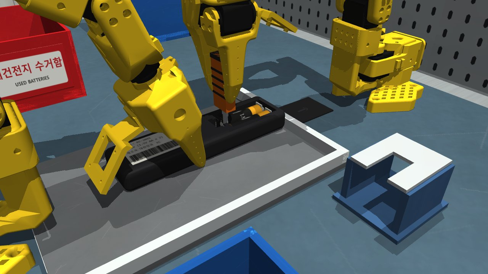
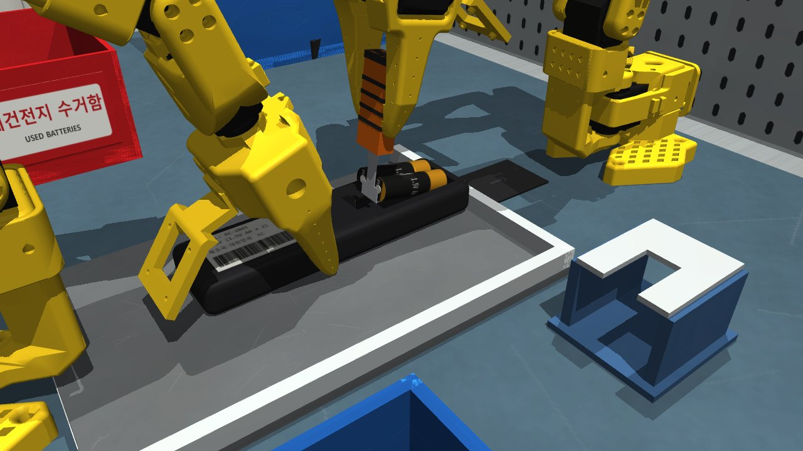
closeup 카메라). 주 팔(왼쪽)이 리모컨을 잡고, 공구 팔(오른쪽)이 공구를 쓴다.correct): 실측 팁 위치로 0.3 mm 이내가 될 때까지 다시 겨냥(팔이 막히면 중단).plan_flip5자유도 팔로 물체를 뒤집을 수 있는 자세는 제한적이다. 무작위 관절 샘플링(12만 개) → 잡은 순간의 그리퍼–기기 관계로 기기 자세 예측 → 상위 200 후보에 대해 roll 경로(5° 단계, 포켓 위치 고정, 관절 점프 ≤ 30°), 운반 경로, 셀 쏟아짐 방지 조건(운반 중 roll ≤ 30°, pitch −30~+20°), MuJoCo 충돌 검사를 통과하는 경로 중 착지점이 수거함 조준점에 가장 가까운 것을 고른다. 이어서 ±0.08 rad로 흔들고, 뒤집힌 채 1.3 s 들어 셀이 빠지게 한다.
| Phase 1 (중간 발표, 11/2–11/6) | Phase 2 (최종, 11/5–11/6) | |
|---|---|---|
| 로봇 | SO-101 1대 | SO-101 2대(주 팔 R + 공구 팔 L) |
| 걸림 해제 | 손가락 홈에 그리퍼 끝을 넣어 셀을 5.3 mm 밀기만 함. + 끝은 바닥 지지대(0.8 mm) 때문에 저절로 3–5° 들림(환경이 대신한 단순화) | 얇은 공구로 밀고 직접 들어 올림. 바닥 지지대 삭제, 립 + 스프링 + notch |
| 기기 고정 | 펜스에 붙이기만 함 | 주 팔이 옆면을 잡아 고정(사람의 다른 손) |
| 단계 | fence → cover → reseat → unlatch → grasp → flip → crate | fence ∥ pick_tool → cover → reseat → hold → pry → retreat → grasp → flip ∥ return_tool → crate |
| 결과 | TV만 동작(재측정 7/10), 다른 기기 0/6 | 4기기 80/80(100 %) + 추가 검증 80/80(100.0 %) |
python run_episode.py --seeds 0-19 --device <기기> -q --out result.json (seed 20–39도 같은 명령).| 기기 | 성공 | 수거함 셀 | 최대 접촉력 평균 / 최대 (N) | 시뮬레이션 시간 평균 (최소–최대, s) | 물리 step 평균 | pry 재시도 에피소드 | 공구 반납 |
|---|---|---|---|---|---|---|---|
| TV 리모컨 (AA) | 20/20 | 40/40 | 25.9 / 26.2 | 70.8 (68.8–74.2) | 35,418 | 0 | 18/20 |
| 셋톱박스 리모컨 (AAA) | 20/20 | 40/40 | 25.6 / 25.8 | 69.8 (66.3–75.3) | 34,880 | 0 | 20/20 |
| 에어컨 리모컨 (AA) | 20/20 | 40/40 | 24.3 / 32.5 | 70.4 (67.8–72.7) | 35,184 | 0 | 18/20 |
| 조명 리모컨 (AAA) | 20/20 | 40/40 | 25.7 / 25.9 | 69.3 (66.1–75.6) | 34,658 | 0 | 20/20 |
| 합계 | 80/80 (100.0 %) | 160/160 | 25.4 / 32.5 | 70.1 | 35,035 | 0 | 76/80 |
| 기기 | 성공 | 수거함 셀 | 최대 접촉력 평균 / 최대 (N) | 시뮬레이션 시간 평균 (최소–최대, s) | 물리 step 평균 | pry 재시도 에피소드 | 공구 반납 |
|---|---|---|---|---|---|---|---|
| TV 리모컨 (AA) | 20/20 | 40/40 | 26.0 / 26.4 | 71.0 (68.9–74.2) | 35,518 | 0 | 13/20 |
| 셋톱박스 리모컨 (AAA) | 20/20 | 40/40 | 25.6 / 26.0 | 72.5 (67.3–77.7) | 36,252 | 0 | 20/20 |
| 에어컨 리모컨 (AA) | 20/20 | 40/40 | 25.0 / 32.4 | 69.9 (68.1–72.6) | 34,970 | 0 | 16/20 |
| 조명 리모컨 (AAA) | 20/20 | 40/40 | 25.6 / 25.9 | 71.2 (66.4–77.1) | 35,624 | 0 | 20/20 |
| 합계 | 80/80 (100.0 %) | 160/160 | 25.6 / 32.4 | 71.2 | 35,591 | 0 | 69/80 |
두 평가 모두 모든 에피소드가 성공했다. 기기에 걸린 최대 접촉력의 최댓값은 32.5 N(기준 40 N)이다. 시뮬레이션 시간은 에피소드당 약 70 s이며 실제 실행 시간은 클라우드 컨테이너에서 평균 약 51 s(4개 평가 동시 실행)였다. 공구 반납 실패는 성공 기준 밖의 참고 지표로, 공구가 포크 거치대에 끝까지 들어가지 않은 경우다.
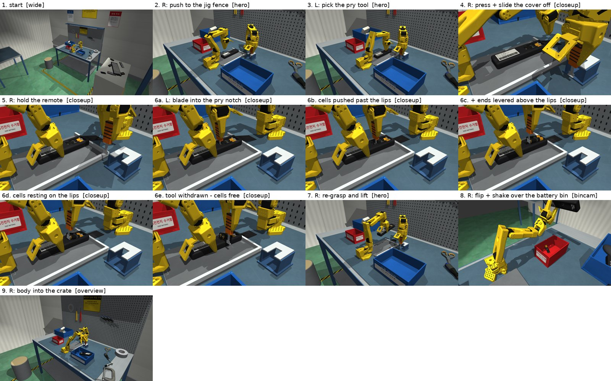
code/renders/final/.같은 seed(0–4 × 4기기)와 같은 성공 기준에서 공구 스킬만 바꿨다(python ablation.py --mode no_tool|push_only).
| 실험 | 설명 | 성공 | 수거함에 들어간 셀 |
|---|---|---|---|
| no_tool | 공구를 쓰지 않고 커버만 연 뒤 주 팔이 뒤집고 흔듦("그냥 뒤집기") | 0/20 | 0/40 |
| push_only | 공구로 셀을 스프링 쪽으로 밀기만 하고 들지 않음(= Phase 1 방식, "밀면 빠질 것") | 0/20 | 0/40 |
| full | 전체 정책(밀고 + 들기) | 80/80 | 160/160 |
Phase 1의 대조실험(걸림 해제 생략)은 성공 0/10이었지만 셀 20개 중 6개가 수거함에 들어가는 "누수"가 있었다(5.1). Phase 2 구조에서는 누수가 0/80이다. 즉 최종 환경에서는 셀이 립과 스프링에 실제처럼 고정되어 "밀고 + 들어 올리기"를 모두 해야만 빠진다.
과제 요구에 따라 원인을 환경(시뮬레이션 모델·기구 설계 문제)과 정책(스킬·계획·제어 문제)으로 구분한다.
두 가지가 겹친 경우 환경+정책. 실패는 로그(단계별 판정), 접촉 목록(어느 geom이 어느 geom을 몇 N으로 밀었는지), 셀 자세 추적,
단계별 반투명 렌더링으로 분석했다(code/dev_tools/).
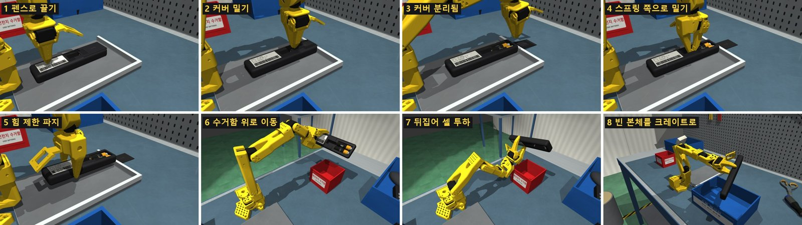
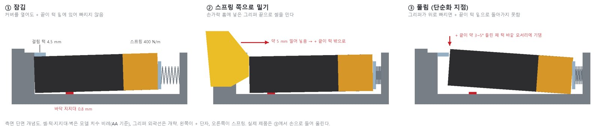
| 버전 | 주요 변경 | 결과 | 관찰 |
|---|---|---|---|
| v1 | 걸림 턱 없음, 뒤집어 빼기 | 5/10 | 턱이 없어 태스크가 너무 쉽고(뒤집기만), 그마저 뒤집기에서 실패 |
| v2 | 턱 3 mm, 스프링 400 N/m, 해제(밀기) 스킬 추가 | 9/10 | 대조실험에서 턱이 약해 해제 없이도 셀이 빠짐 |
| v3 | 스프링 1000 N/m | 0/10 | 눌러도 해제가 안 되고, 풀린 셀도 떨어지지 않음 |
| v2b | 400 N/m, 턱 마찰 0.05, 칸막이 전체 길이 | 4/5 | |
| v4 | 턱 4.5 mm, 행정 6.8 mm | 10/10 | 중간 발표 수치 |
| 재측정 | 다기기 리팩터링 후(11/6) | 7/10 | 실패 seed 1, 6, 9 모두 뒤집기 단계. 10/10을 낸 코드는 남아 있지 않음 |
| 증상 | 원인 | 조치 | |
|---|---|---|---|
| 환경 | 떨어진 셀이 수거함 바닥 아래로 사라짐 | 낙하 속도가 2 ms당 4 mm, 바닥 두께 4 mm → 터널링 | 바닥 12 mm |
| 환경+정책 | 뒤집을 자세가 없음 | 수거함 위치 (0.06, 0.24)가 5관절 팔의 뒤집기 도달 범위 밖 | 도달 가능 자세 분포를 분석해 (0.12, 0.33)으로 이동 |
| 환경 | 턱이 있어도 셀이 빠짐 | 셀이 옆으로 4 mm 밀려 턱 밖으로 나감 | 옆 틈 0.25 mm, 칸막이 |
| 환경 | 커버를 밀 때 리모컨이 들림 | 바닥 충돌 박스를 여러 조각으로 나눈 이음매 | AA는 한 장 유지 |
| 환경 | 그리퍼가 홈에 안 들어감 | 충돌 메시가 간이 박스보다 큼 | 홈 15.6 × 34 mm로 확대 |
| 정책 | 끌기 실패 | 베이스 근처에서 팔이 막힘 | 뒤에서 밀기 대신 윗면 마찰로 끌기 |
| 정책 | 파지력 42.6 N(기준 초과) | 서보 최대 토크로 조임 | 힘 제한 파지 |
| 정책 | 뒤집는 중 리모컨이 빠짐, 이동 중 셀이 먼저 빠짐 | 무게중심에서 먼 파지, 빠른 회전, 경로 중 기울어짐, 팔 충돌 | 잡는 위치 조정, 회전 감속, 경로 사전 검증, 충돌 검사 |
| 정책 | + 끝을 들어 올릴 수 없음 | SO-101 그리퍼 끝 모양 | 환경 단순화(저절로 들림) — Phase 2에서 공구로 해결 |
| 정책 | 셀이 수거함을 벗어남(Phase 1 미해결) | 뒤집을 때 건전지 칸이 수거함 중심에서 24 mm 어긋남. 단, 성공 seed도 같은 계획이라 단독 원인은 아님 | Phase 2: 착지점 조준, 수거함 쪽 확장, 5° roll |
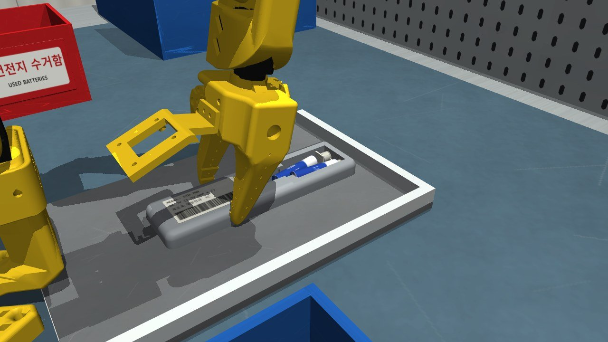
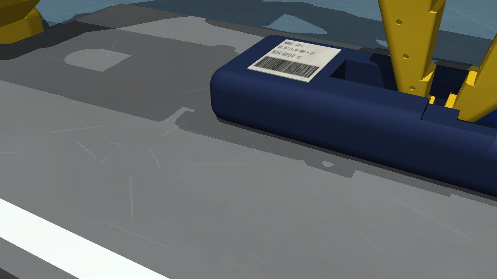
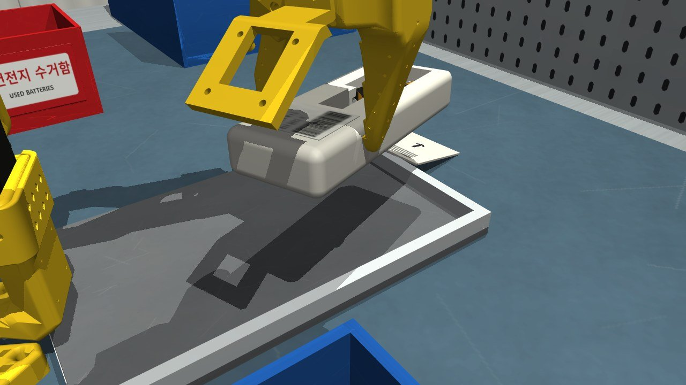
eval16–19는 회귀를 발견하고 중간에 멈춘 평가(분모 = 그때까지 끝난 에피소드). 모든 수치는 code/dev_tools/_out/evalN/ 로그(저장소에는 최종 결과만 code/renders/에 보관)와 PROGRESS.md 작업 로그에 근거.
| 증상 | 원인 | 조치 | |
|---|---|---|---|
| 환경 | 공구가 셀 속으로 수 mm 파고듦 | 가벼운 물체에 MuJoCo 기본(연성) 접촉 | 경량 부품 solref 0.005 |
| 환경+정책 | 거치대에서 공구를 넘어뜨리거나 비뚤게 잡음 | 높은 접근, 긴 공구 | 낮은 옆 접근, 포크형 거치대, 짧은 공구, 손잡이 폭 방향 파지 |
| 정책 | 공구 팁 자세 도달 불가 | wrist_flex ±95° 한계 | 10° 기울여 잡기, 들어 올릴 때 점진적 기울임 |
| 정책 | 팁 오차 수 mm | 서보 처짐, 손 안 공구 자세 | 실측 팁 폐루프 보정, 공구 손 안 보정 |
| 정책 | 기울인 블레이드가 셀 윗모서리를 밀어 립에 끼임 | 밀 때 접촉점이 높음 | 밀기 전 블레이드 수직 |
| 환경 | 발이 두 셀 사이 V홈을 쐐기처럼 밀어 14 N 옆힘 | 좁은 notch | 넓은 notch + T자 팁 |
| 환경 | 넓은 notch로 셀이 빠져나옴 | 립 사이가 넓음 | 좁은 립(틈 9.6 mm < 셀 지름) |
| 정책 | 커버가 손가락에 끼어 기기 위로 떨어짐 | 커버를 민 뒤 그냥 놓음 | 펜스 너머에 버리기(drop_cover) |
| 정책 | 두 팔 손목·카메라 마운트 충돌 | 작업 공간 겹침 | L은 손잡이 폭 방향 파지, R은 20° 기울여 잡기, L이 먼저 물러난 뒤 R 재파지 |
| 정책 | 뒤집기 중 셀이 수거함 밖 / 자세 없음 | 5자유도 자세 제약 | 샘플링 기반 계획, 5° roll, 착지점 조준, 수거함 확장(eval7 10/12) |
| 정책 | 파지력 40 N 초과 | 서보가 목표까지 계속 조임 | 서보 힘 제한 18–30 N(eval10 40/40) |
| 정책 | 운반 중 느슨한 셀이 앞으로 미끄러져 다시 고정됨 | 운반 자세의 기울기 | 운반 자세 제약(앞쪽 기울기 ≤ 20°) |
| 환경 | TV: 기울어진 셀이 블레이드와 스프링판 사이에서 압축돼 튀어오름 | 스프링 400 N/m 과다 | 기기별 스프링(TV 300 N/m) |
| 환경+정책 | AAA 셀이 스프링 에너지로 튕겨 나감 | 가벼운 셀 + 강한 스프링 | AAA 150 N/m(예압 0.6 N 유지), AAA는 립 끝 + 1.1 mm만 밀기 |
| 케이스 | 관찰 → 원인 | 개선 → 결과 | |
|---|---|---|---|
| 정책 | light seed 0 (eval15) | 공구가 리모컨을 들어 올리고 리모컨이 12° 회전. 접촉 분석 결과 주 팔의 고정 조가 기기 옆면이 아닌 윗모서리에 올라앉아 있었고, 힘 제한기가 누르는 힘을 쥐는 힘으로 오인해 조를 끝까지 열었다 → 기기는 "누르기"로만 고정됨 → 공구를 notch 안에서 세울 때 블레이드 모서리가 notch 벽을 쓸어 기기가 빠짐 | 움직이는 조 접촉력(jaw_force)으로 파지 실패 감지, notch 위에서 먼저 세우기(⑰ 참조) → 해결 |
| 정책 | light seed 13 | 들어 올리는 중 공구가 갑자기 3 mm 옆으로 튀고 셀 두 개가 칸 안으로 튕김. 셀 곡면이 발을 옆으로 밀고(15 N) 옆 오차 적분 보정이 와인드업 → 셀이 풀리는 순간 공구가 튐 | 적분 감쇠(0.9) + ±2 mm 상한 → 해결 |
| 정책 | TV/STB seed 0, 6 (eval16, 회귀) | 재파지 3회 모두 실패해 그리퍼가 열린 채 고정 실패. 이 자세들에서는 SO-101(5자유도)이 "20° 기울기 + 조 방향"을 정확히 도달할 수 없어 IK 오차 4–9 mm가 위치 오차로 나타남. 2.5 mm씩 바깥으로 옮기는 재시도로는 해결 불가 | 원인 확인 후 다른 방법 시도(아래 두 행) |
| 정책 | AC seed 0 (eval17, 회귀) | 도달 가능한 기울기(0°)로 잡게 했더니 L 팔 추종 오차 20 mm: R 손목이 L 팔 경로에 들어와 두 팔이 충돌 → 20° 기울기가 필요했던 이유를 재확인 | 20° 이상만 허용 |
| 정책 | TV/STB/light seed 0, 6, 9 등 | 같은 현상(고정 조가 윗모서리에) | IK 목표 사전 보정: IK 해의 고정 조 위치가 원하는 위치가 될 때까지 목표를 옮김(남는 오차는 방향으로 1–4°) + 관절공간 이동, 20° 유지 → 20개 시험 중 19개 정상 옆면 파지 |
| 환경 | AAA 다수 (eval11–18 내내 남던 실패의 근본 원인) | 들어 올릴 때 두 셀 높이 불균형, 공구가 옆으로 밀림, 셀이 튀거나 걸림. AAA 셀 간격 19 mm에서는 셀 최저선이 |y| = 9.5 mm인데 공구 발은 ±8 mm → 발이 셀의 안쪽 곡면을 밀어 올려 큰 옆힘(쐐기, 15 N)과 불균형. AA는 최저선 8 mm = 발 끝이라 거의 수직으로 들어 안정적이었음 | AAA 셀 간격 16 mm(AA와 같은 기하) → light 1/3/7/13/16 1회 시도에 균형 있게 성공(eval19 STB 20/20) |
| 환경 | light seed 0, 3 (eval19) | 거의 다 들었을 때 한 셀이 뒤로 튕겨 기기 밖으로 떨어짐. 접촉점이 y = 7.9–8.0 mm에만 있었음: 셀 중심선(8 mm)이 블레이드 가장자리(±8 mm)와 같아 블레이드가 + 끝면의 절반만 막음 → 스프링이 미는 셀이 블레이드 모서리를 돌아 빠짐 | AAA 셀 간격 14 mm(중심선이 블레이드 안쪽 1 mm). 보유력 시험 통과 → light 0/1/3/5 모두 1회 성공 |
| 정책 | AC seed 0, 10, 11, TV seed 7 (eval19) | 공구 발이 notch가 아니라 립·셀 위에 내려앉음, L 팔 "막힘". light seed 0의 대책(notch 위에서 먼저 세우기)이 두꺼운 기기(AC 26 mm, TV 22 mm)에서는 그 높이의 수직 자세가 wrist_flex 한계로 도달 불가(IK 오차 6–16 mm) | 수직 자세가 도달 가능할 때만 위에서 세우고 아니면 기울인 채 하강 → 네 seed 모두 1회 성공 → eval20 80/80 |
| 환경 | AC seed 20 (추가 검증 seed, eval20 코드 기준 79/80의 유일한 실패) | 들어 올리는 중 셀 1이 갑자기 스프링 쪽으로 19 mm 이동하며 +44°로 뒤집힘(그림 9). 에어컨 셀은 거의 수평으로 통째로 들려 − 끝도 약 6–9 mm 올라가고(성공한 AC 실행에서도 − 끝 중심이 접점판 윗면 근처까지 감), − 끝 접촉이 접점판 위쪽 모서리로 올라가면 블레이드(낮은 + 끝)와 접점판(높은 − 끝)의 압축력 짝힘이 − 끝을 위로 돌림 → − 끝이 접점판을 넘으면 블레이드가 셀을 앞으로 밀어 뒤집힘. 압축력 = 스프링 400 N/m × (예압 + 6.6 mm) ≈ 3 N | 에어컨 스프링 300 N/m(TV와 같은 값, 짝힘 25% 감소). 보유력 시험 통과 → AC seed 0–39 재평가(4.2–4.3) |
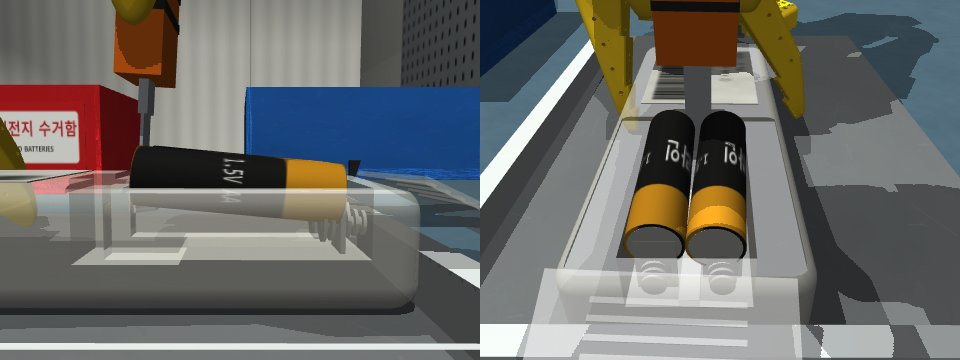
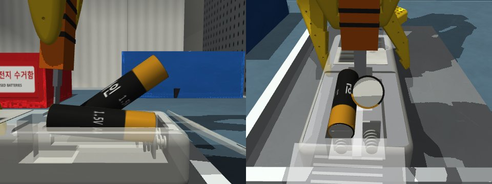
cd code uv venv .venv --python 3.12 uv pip install --python .venv/bin/python -r requirements.txt # Windows: .venv\Scripts\python.exe python run_episode.py --seeds 0 --device tv_remote # 1회, 자세한 로그 python run_episode.py --seeds 0-19 --device light_remote -q --out r.json # 평가 python ablation.py --mode no_tool --seeds 0-4 # 대조실험 python live_demo.py --device tv_remote --seed 5 # 대화형 뷰어 데모 MUJOCO_GL=osmesa python render_rollout_stages.py --device tv_remote --seed 5 # 그림
venv는 영문 경로에 둔다. 헤드리스 리눅스 렌더링은 MUJOCO_GL=osmesa. 실행 환경: Python 3.12, mujoco 3.17.0, so101-nexus 0.10.0 (Phase 1: Windows 11, Phase 2: Linux 클라우드 컨테이너). GPU 불필요.
| 경로 | 내용 |
|---|---|
code/battery_sim/scene.py | 장면 MJCF 생성(방, 작업대, 지그, 수거함, 장식, 조명, 카메라, 두 번째 팔, 공구, 거치대) |
code/battery_sim/devices.py | 리모컨 4종(커버, 래치, 스프링, 립, notch, 셀) |
code/battery_sim/env.py, ik.py, success.py | 양팔 환경·무작위화·래치 로직·접촉력 모니터, DLS IK, 성공 판정 |
code/battery_sim/policy.py | 스킬 + 상태 머신(정책 전체) |
code/run_episode.py, ablation.py, live_demo.py | 평가, 대조실험, 데모 |
code/renders/eval_bimanual_*.json, renders/heldout/, renders/ablation_*.json | 최종 평가 결과(에피소드별) |
code/dev_tools/ | 디버깅 도구(스냅샷, 단계별 추적, 접촉 목록, 보유력 시험) |
code/legacy_midterm/, records/phase1_single_arm/ | Phase 1 스크립트와 실험 기록(데이터, 그림, 인수인계 문서) |
code/PROMPTS_phase1.md, PROMPTS_phase2.md | LLM 프롬프트 원문 기록 |
PROGRESS.md, REPORT_MATERIAL.md | Phase 2 작업 로그, 설계·실패 분석 정리 |